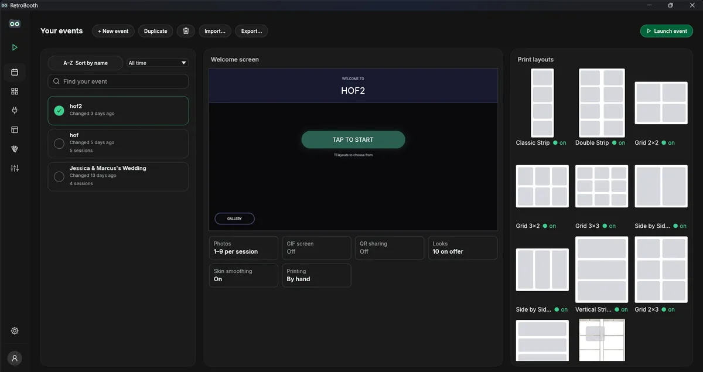
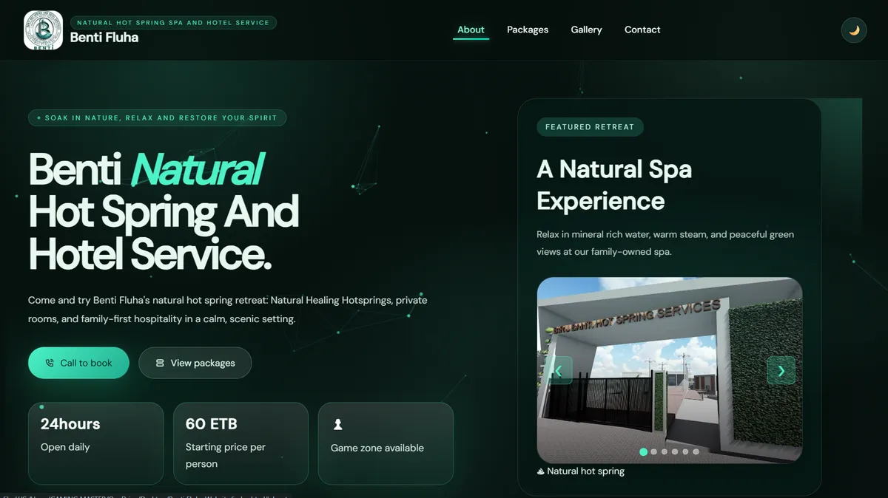
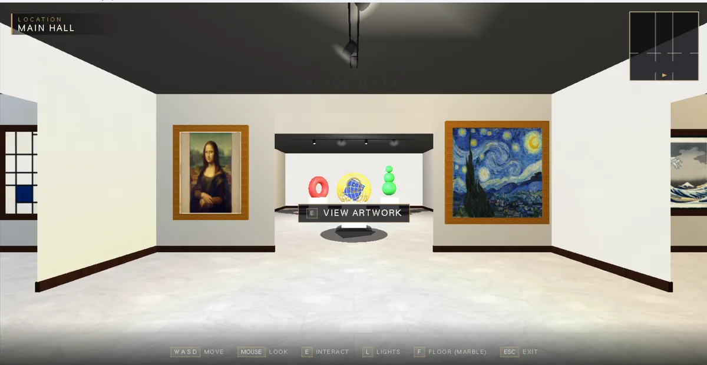
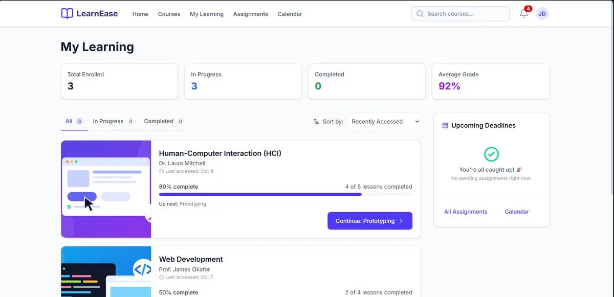
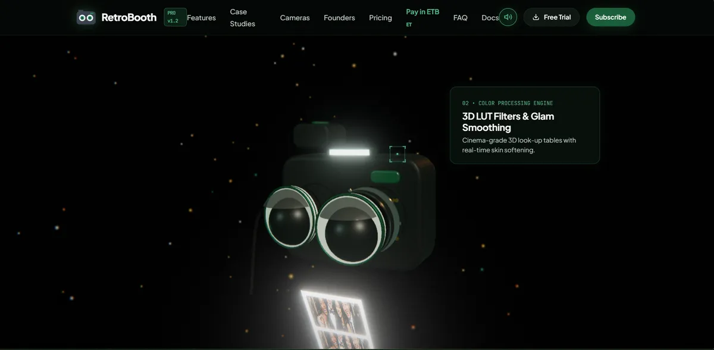
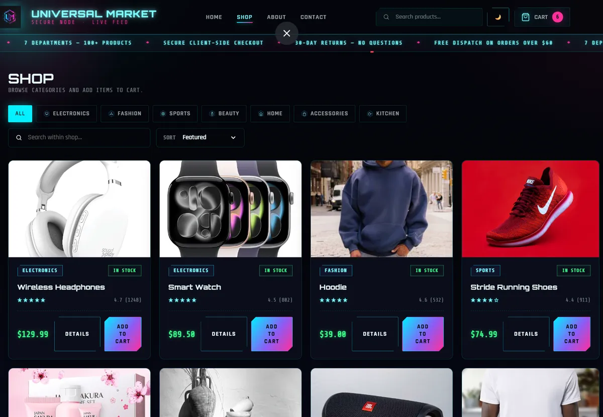
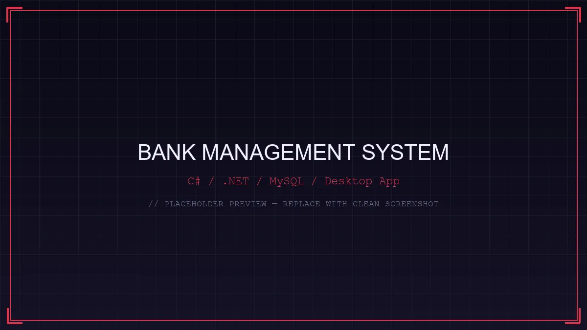
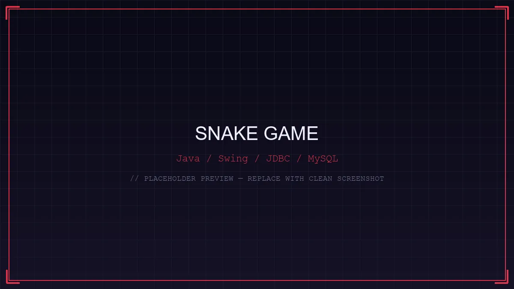
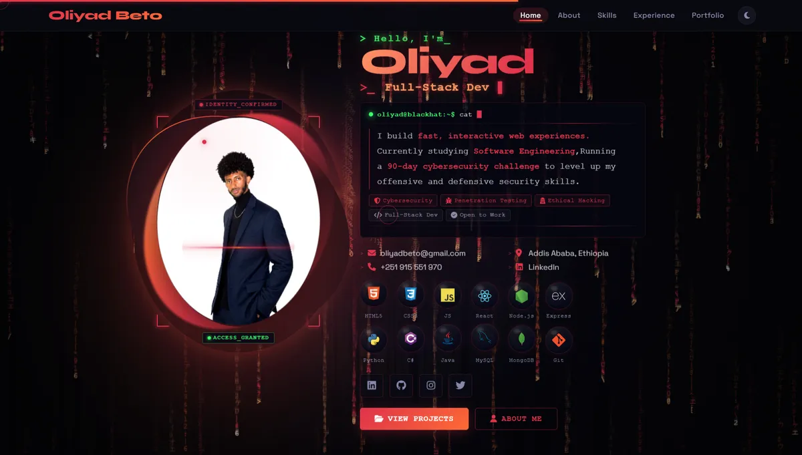

What I've built
Featured Projects
A collection of software systems, 3D interactive graphics, full-stack applications, and responsive platforms built with modern technologies.

// FEATURED SHOWCASE
RetroBooth
Problem: Commercial event photo booths rely on expensive, fragmented software with rigid templates, clunky driver configurations, and high latency that frequently stall during live events.
What I built: A high-performance, offline-first Windows photo booth application built in Rust and egui, featuring dual operator Studio & guest Kiosk modes, direct Canon EDSDK and Nikon SDK hardware integration via dedicated IPC host processes, automated 300 DPI composite template rendering, 3D LUT (.cube) color grading, and zero-latency Windows GDI printing.
Key challenge: Architecting a low-latency IPC protocol between the UI and native C++ camera SDK hosts, optimizing per-pixel CPU image compositing in Rust for instant 300 DPI strip output, and engineering a resilient guest kiosk state machine with single-shot retake workflows and PIN-protected operator controls.
// RESORT & SPA
Live

Benti Fluha
Problem: A natural hot spring resort and spa needed an online presence to showcase accommodations, spa services, and visual amenities to prospective guests.
What I built: A fully responsive multi-section showcase featuring room highlights, services breakdown, interactive image gallery, and a direct inquiry contact form.
Key challenge: Deployed live to GitHub Pages with mobile-first responsive layouts, optimizing high-resolution imagery and CSS Grid for rapid page loads and touch gestures.
// 3D VIRTUAL SPACE
3D WebGL

Interactive 3D Art Museum
Problem: Designing an immersive virtual gallery that lets visitors navigate and explore curated digital exhibitions in full real-time 3D within the browser.
What I built: A 3D museum environment built with Three.js and WebGL, featuring procedural architectural rooms, dynamic spotlights, custom framed artworks, and first-person exploration controls.
Key challenge: Optimizing WebGL render loops, geometry culling, and texture memory for consistent 60 FPS performance with dynamic ambient lighting and camera collision handling.
// FULL-STACK LMS
Live

E-Learning Platform
Problem: Students and instructors need a centralized platform that unifies video lecture streaming, interactive assessments, and real-time progress monitoring.
What I built: A full-stack educational web application with structured module paths, multimedia lecture delivery, interactive quizzes, student enrollment tracking, and instructor dashboards.
Key challenge: Designing normalized database schemas in MongoDB and responsive UI state management with secure JWT authentication and granular role-based permissions.
// CREATIVE 3D WEB
3D WebGL

Interactive 3D Website
Problem: Creating an engaging, futuristic promotional web destination that stands apart from flat layouts through real-time interactive 3D computer graphics.
What I built: A 3D web experience built with Three.js and custom GLSL shaders, featuring procedural geometric mesh deformation, dynamic lighting, particle swarms, and scroll-bound camera choreographies.
Key challenge: Coordinating fragment shader animations with smooth DOM scroll triggers, utilizing GPU instancing for smooth particle physics across all devices.
// STOREFRONT
Live

Universal Market
Problem: Creating an immersive, responsive e-commerce shopping experience purely on the client side without relying on frontend frameworks or backends.
What I built: A cyberpunk-styled "Grid Runner" storefront in vanilla HTML, CSS, and JavaScript featuring glassmorphism product cards, interactive cart interactions, animated status tickers, and HUD panels.
Key challenge: Achieving rich animations and high visual fidelity with pure CSS and vanilla DOM manipulation, ensuring seamless cart state reactivity without frontend frameworks.
// DESKTOP SOFTWARE
Desktop app

Bank Management System
Problem: Simulating reliable desktop financial operations requiring persistent records, data validation, and transactional account integrity.
What I built: A C#/.NET desktop banking application implementing object-oriented models for account creation, deposits, withdrawals, and balance tracking backed by a MySQL database.
Key challenge: Structuring clean OOP domain entities and managing SQL transaction state with parameterized queries and strict account balance validation rules.
// GAME DEV
Desktop app

Snake Game
Problem: Implementing real-time 2D game loops, collision detection, and persistent multi-player high scores in desktop Java.
What I built: An interactive Snake game using Java Swing and AWT with real-time keyboard handling, game state management, and a persistent MySQL leaderboard connected via JDBC.
Key challenge: Synchronizing the Java Swing event dispatch thread with game loop state updates, maintaining millisecond-accurate collision detection and real-time leaderboard persistence.
// PERSONAL BRAND
Live

Portfolio Website
Problem: Presenting technical software engineering projects, system skills, and interactive case studies within a memorable developer personal brand.
What I built: A cyber-themed portfolio built from scratch in vanilla HTML5, CSS3, and modern JavaScript, featuring 3D perspective card tilts, dynamic theme toggle, interactive terminal bio, and visitor feedback.
Key challenge: Building performant 3D tilt and matrix rain animations with zero external UI libraries while preserving accessible high-contrast light and dark modes.
// COLLABORATION
Back to Home
Like what you see? Let's work together.
I'm always open to discussing new opportunities, software engineering roles, or freelance projects.